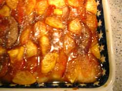

Mom makes plum cake
After all the restaurant pho we ate, and in some cases, suffered through, this summer, I decided to make a stab at trying my own this week. It was a bit of a chore, rounding up all the ingredients – the bones, the exotic seasonings, the condiments and add-ins, and I even had to purchase new, deep soup bowls because all we really had were cereal bowls, which were too small, or pasta bowls, which were too shallow. I spent two days on it, making the stock one day, and removing the congealed fat from it the next before proceeding with the rest of the recipe. After all that I was a little hurt to have my husband judge that it “needed work.” I’m thinking it will be a cold day in hell before I make it at home again; it’s a lot easier to pay $7.95 in a restaurant!

Anyway, this post isn’t even about the pho, but about what I made for dessert. Since I was serving the soup to four men, two of whom had never eaten it before, I wanted to make sure I had a substantial dessert I knew they would like, yet something that vaguely went with the meal. I know, sticky rice topped with coconut milk, or dumplings filled with sweetened bean paste would have been more authentic, but I remembered a cake I used to make a lot in the 70’s from the Joy of Cooking, called Plum Cake Cockaigne. I baked it right before we ate, so it was warm, and served it with scoops of vanilla ice cream.
Butter an 8 or 9-inch square pan. Preheat oven to 425º.
Sift together:- 1 cup all-purpose flour
- 1 teaspoon baking powder
- 1/4 teaspoon salt
- 2 tablespoons sugar
- 1 1/2-3 tablespoons butter
Work these ingredients like pastry.
Beat well in a measuring cup:- 1 egg
- 1/2 teaspoon vanilla
- Enough milk to cup to measure 1/2 cup mixture
- 4 cups sliced unpared plums or peaches
- 1 cup white or brown sugar
- 2 teaspoons cinnamon
- 3 tablespoons melted butter
Bake about 25 minutes, or until top is bubbling and fruit is soft when pierced with sharp knife.
Note If you don’t know what Irma means when she says work ingredients like pastry, she means cut the butter into the flour until it looks crumbly. I use my food processor for the whole thing. I think it’s funny that she assumes everyone will just know what she means by that. Back in the 30’s I’m sure they did.
Comments
After all that I was a little hurt to have my husband judge that it
Sorry.
All men are pigs.
What a wonderful way to use all the plums in season! There are times where only the good old Joy of Cooking will do!
So we know what Billy’s opinion was, but what did you think of the pho?
I’ve toyed with the idea of making it before but never have. I’ve always worried that it was one of those things that you could put lots of time, effort, and money into and then be underwhelmed by your final effort. I also think that MSG is a pretty standard pho ingredient everywhere and that’s one of the factors in why the broth may taste better when you eat it at a pho place than when you make it at home.
I’m laughing at Billy’s comment which reminds me of that joke about why men don’t get mad cow disease. (Because men are pigs.)
the comment from billy was one of the most adorable blog moments i’ve ever witnessed. awwww . . .
ok. enough of that.
the discussions of pho, here, and lime etc scallops, later, make an interesting pair. i was very much in agreement with the sentiment, “I’m thinking it will be a cold day in hell before I make it at home again; it’s a lot easier to pay $7.95 in a restaurant!” and I have often come to this conclusion myself based on my own reaction to my own somewhat elaborate home preparation of certain dishes that can be bought and consumed in public.
i often think of the example of panettone in italy, which is pretty widely (i think) considered to be something you buy, not something you make, even by families that might spend a lot of time on other, equally or more so, elaborate and delicious homemade specialities.
to be continued . . . as comments to the scallops post.
I love cooking Asian dinners, but personally, I’m not big on Asian desserts. This is the perfect solution for me, and for all of the seasonal plums I see in the farmers’ market!
Ivonne, you’re right about the Joy, and just when I thought it was safe to relegate it to an inaccessible shelf in the new kitchen!
Honey, I forgive you! Besides, given that you came back for a second and third bowl, I took what you said with a grain of salt, er, chili sauce.
Julie, you could be right about the MSG, but also, most of the recipes called for fish sauce, which I’m a little funny about and try to avoid. In fact, I never order pad thai because I know the dressing is made with it. I tried to replicate that tang with some rice wine vinegar, but that may have been part of what was missing. Also, the broth might have been a little bland simply because the bones weren’t meaty enough. The butcher I bought them from had managed to scrape literally every scrap of meat from them, so I didn’t have much to work with. If I ever do make it again I think I would splurge on some ox tails or short ribs to augment the soup bones and give the broth some more flavor.
zp, I know what you mean about some things just shouldn’t be attempted at home. French baguettes fall into that category unless you have your own brick oven, not because they’re complicated but because you just can’t get the proper crust in a home oven. I’m sure Italians never make their own pannetone and I wonder how many Germans make their own stollen the way I do.
Anne, let me know what you think, but didn’t you make a plum cake of your own recently?
Hi Rebecca-
I made a fruit pie with peaches, blueberries and blackberries. Maybe that’s what you’re thinking of? It’s funny you should ask, because I did buy a bunch of plums to make a cake, but they were so good Fred and I ate them all!
I do remember salivating over that pie, Anne! I usually make at least one peach/blueberry pie a summer because I love that combination but what with my kitchen and all never got to it this year and now it’s probably too late.
But someone on a blog made a sort of pound cake with plums on top that stuck in my brain and reminded me of the Joy cake I used to make so long ago; I thought it was you but obviously not. And I was too lazy to actually research it!
Greetings from Minneapolis— I stumbled upon this post of yours because I had made a great Plum Cake Cockaigne out of the old “Joy” last week, and bought a bag of very ripe plums tonight, thinking to make it again, as it was so easy and excellent. I was thinking about the Cockaigne thing that they’ve got going in “Joy,” and idly Googled
cockaigne cake
…never thinking to encounter someone who’d just made the very same cake, on just about the same day!
Anyhow, it’s a great recipe, and of course the old “Joy” is about a billion times better than the new watered-down version, which doesn’t mention possum, much less whale. What a travesty.
Isn’t the internet wonderful?! I couldn’t agree with you more about the old Joy; I actually haven’t even read the new one but I wonder if it still maintains that the best fat in which to fry french fries is the rendered fat of beef kidneys. I was just talking about that with a group of people last night and describing my one and only experience with a pair of beef kidneys which had been given to me by my parents after they had butchered a steer. I was determined to save all the fat, render it, and make some proper french fries a la Irma (I was about 19 years old). After wrestling with the darn things for an hour or so and becoming completely nauseated by the smell, I cut them all up into small pieces and fed them to my cats.
Welcome to the blog and thanks for your comment!
I’ve made this cake often over the years only I ususally use canned sliced peaches and it works great! So yummy! And always served with vanilla ice-cream of course.
Interesting note: We just recently moved and all my cookbooks are packed in boxes at present. We’re staying with my parents and I wanted to make this for dessert tonight…… but alas! No recipe!
So I googled “joy of cooking – peach cake cockaigne” and I was so amazed and delighted that this website turned up the recipe.
Thanks! :)
I too needed the recipe and couldn’t get to my old “Joy.” I’ve been making
this cake for years using all types of
fresh summer fruit, even mixing fruits
when I had 1 plum, nectarine and apple.
I’m so glad you had this posted.
This is the best recipe which has been a staple with my family for 3 generations. My kids call from college to get the recipe!
Thank you for this recipe! As an undergraduate at university a few years ago, I stumbled upon a free copy of Joy of Cooking-a battered, fading old book….and loved it to pieces, delighting my roomates with recipes like this plum cockaigne. Although since getting married, I’ve left the book at my parent’s place! Onto the Pho question. I just happen to have a few Vietnamese friends whose mothers make Pho from scratch, for special occasions, mind you,….and might I say that the broth alone takes such a sizeable quantity of beef bones (we’re talking over 12 hours of reducing beef bones to broth) to get to the flavour of the restaurant kind that it’s probably better to go out to eat it….
Thanks a lot! I used to have the old paperback Joy of Cooking from the 70’s also and when I wore it out I bought a new hard cover many years later never realizing the new version wouldn’t have a copy of this recipe that was a favorite in our house when the kids were growing up in the 80’s & 90’s -so good to find it again!
You’re welcome, ladies. I wonder why they removed this old favorite from the revised cookbook? And here it is, plum season again.
Add a comment